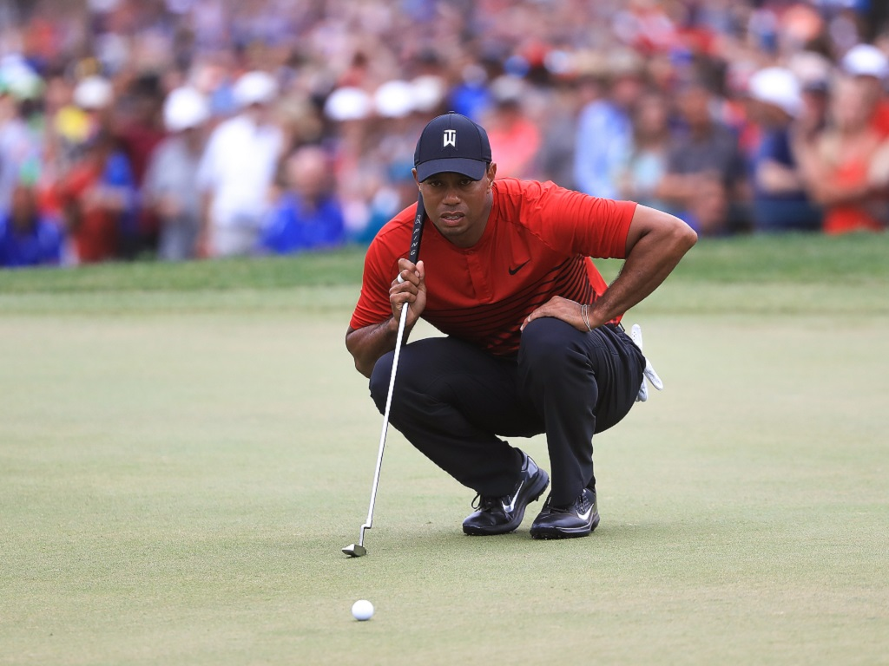

Tiger woods is my favorite golfer. He is the GOAT!
Tiger Woods is a pro golfer. Tiger Woods was born in Cypress, California, in 1975. He won the U.S. Masters at Augusta in 1997 with a record score at age 21, making him the youngest man and the first African American to earn the title. Woods won another 13 majors and was named the PGA Player of the Year 10 times over the next 12 years, but he struggled to regain his top form after personal problems surfaced in 2009. With his victory at the 2019 Masters, Woods claimed his first major title in nearly 11 years.
Tiger woods has won all of the following major tournaments
If you want to watch more of Tiger woods'greatest golf moments click HERE!
